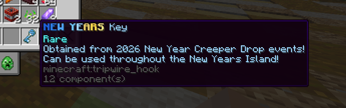
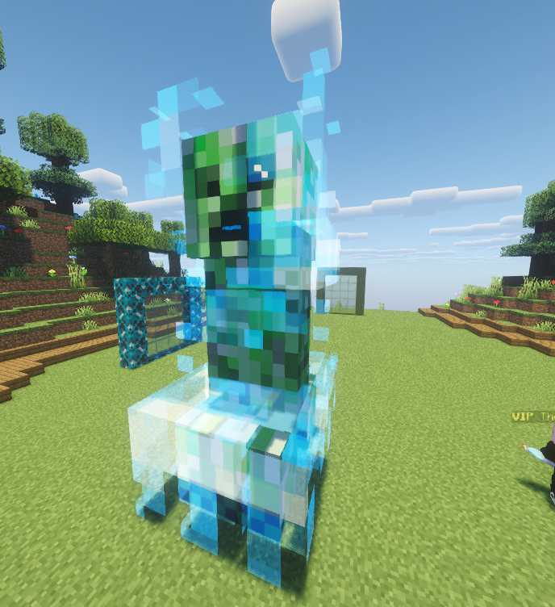
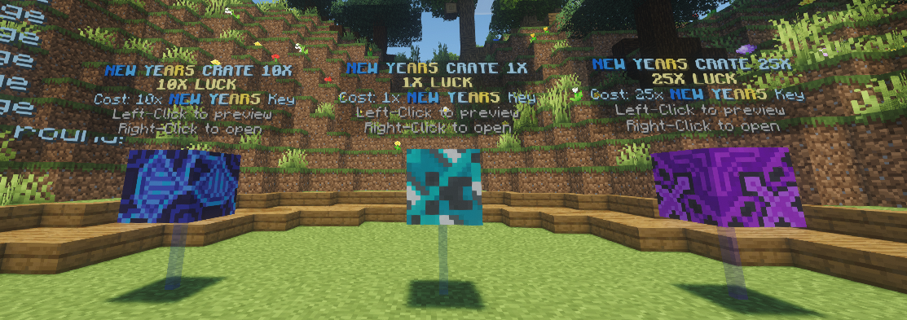
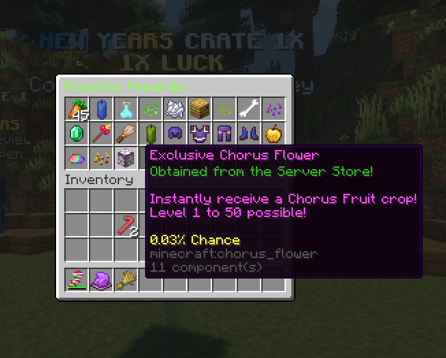
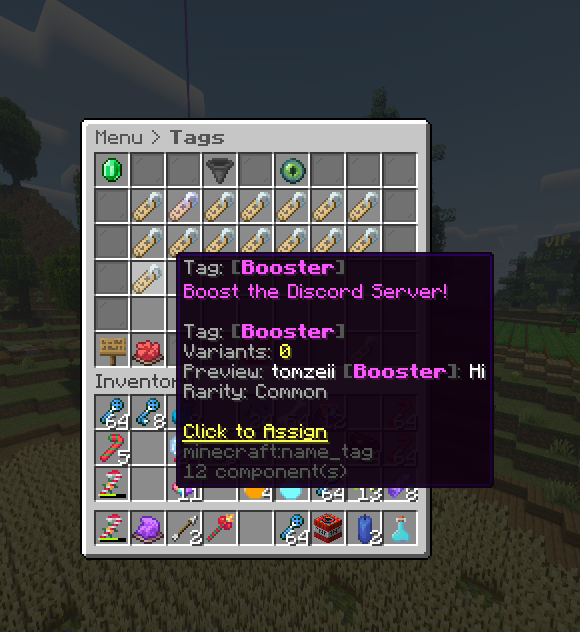
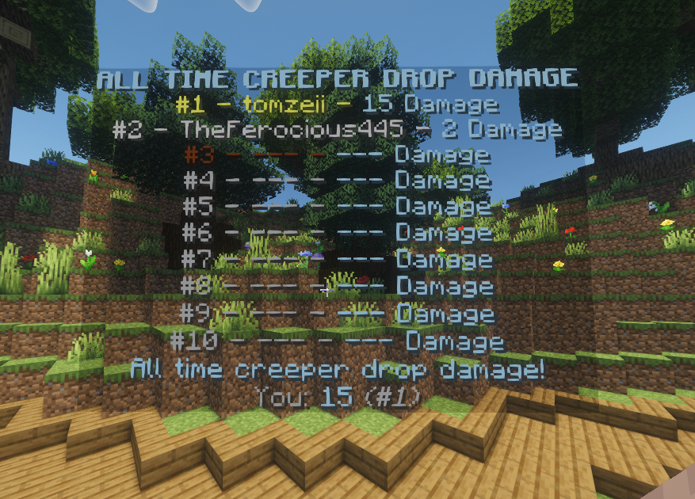
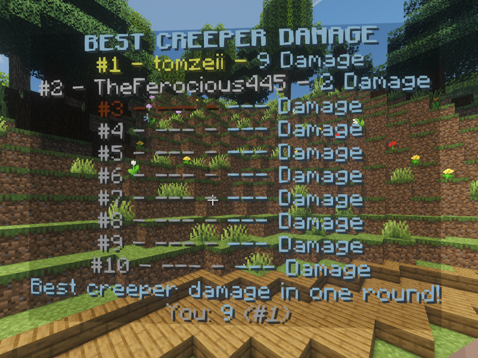
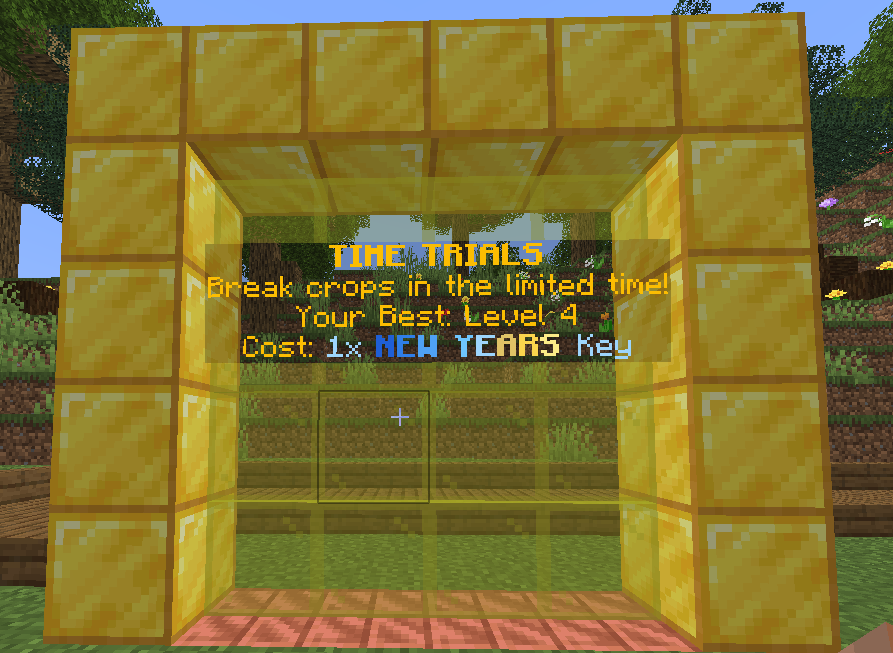
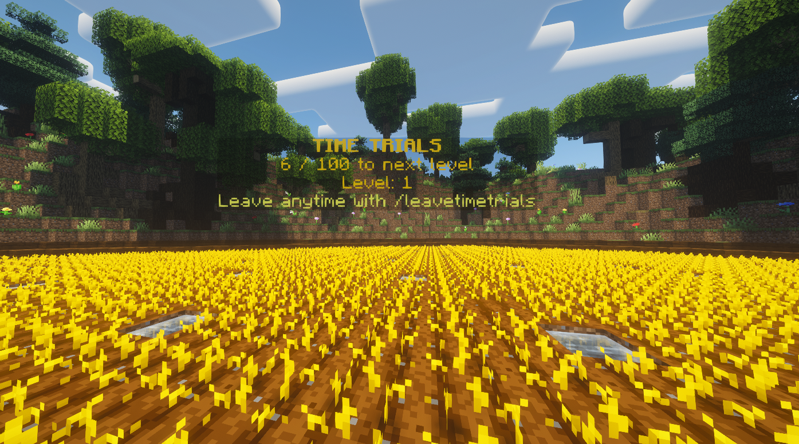

Happy New Years! We hope you had a great holidays!
As updates continue, we'll be focussing more on bug fixes and balances.
Added
New Years Key
Used throughout the New Years Island!
Damage the New Years Creeper Drop to get these!

New Years Creeper Drop
This occurs hourly on the New Years Island!
Depending on damage percent dealt, you'll receive double the amount of New Years Keys!
For example:
If you deal 50% of the damage, you'll receive 100x Keys
If you deal 10% of the damage, you'll receive 20x Keys
It only stays for 5 minutes hourly, so get your keys quick.

New Years Crates
One of many ways to spend your New Year Keys. Will you be lucky?
Includes LIMITED NEW YEAR ARMOR and weapons!
You have the option to spend 1x, 10x or 25x Keys
Each crate has the same items, with different, greater chances!


Tags
Spice up your name in the chat and tablist!
Leaderboard Crown tags have been moved here so you can select them!
Includes 5 new tags this update:
Shiny Enthusiast - Unlocked for completing 20 Shiny Quests
Racer - Win a Crop Race
Xmas - Purchased from the Santa Shop
26 - Unlocked during the 2026 New Years Event
Booster - Boost the Discord Server
Gem Party - Be online when the Gem Crate is active (10+ players)

New Years Leaderboards
Fight the creeper, climb the boards!
#1 on both of these boards at the end of this event will receive a MEDALLION CHARM EACH!
Two limited leaderboards:
Best Creeper Damage - Most damage to the creeper drop in a singular round
All Time Creeper Damage - Most damage to the creeper drop across the entire week
We hope this rewards both short-term and long-term grinders!


Time Trials
Another fun competition!
Head to the portal in the New Years World to start a Time Trial!
You'll be teleported to the Time Trials Island.
Farm as many crops as you can to level up.
Durability is disabled here, so you won't have to repair.
You're limited to only 5 minutes, so get your boosters ready!
What level will you get?


Fixed / Changed
- Rainbow Hunter charm chance from Rainbow Machine 0.5% -> 2%
- Broadcast culling - far less messages sent globally for better chatting experience with other players
- Windgrab Enchant now only lasts 5 seconds of Speed V
- Items waiting in Escrow to collect message no longer spams
- Removed /paymoney
- You can no longer do /upgrade
- Festive Tools (Hoe, Battleaxe, etc) now look naturally held to other players
- Fixes to Diamond and Money potion cooldowns
- Chaotic: 0.5% chance to destroy tool -> 0.5% chance to destroy 1/4 durability of tool
~ Our biggest event yet! Have fun!!